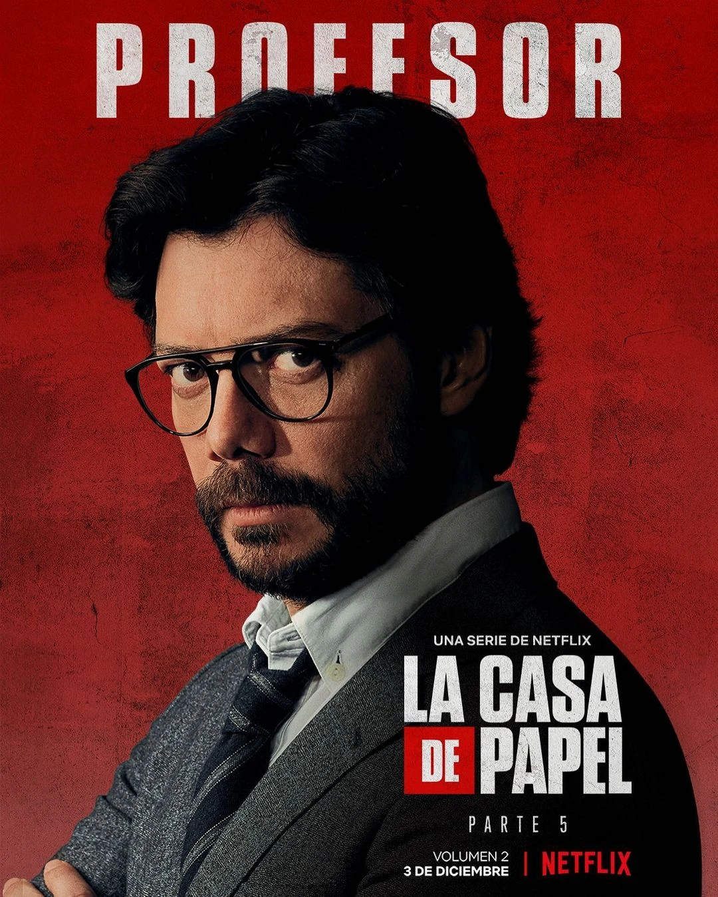
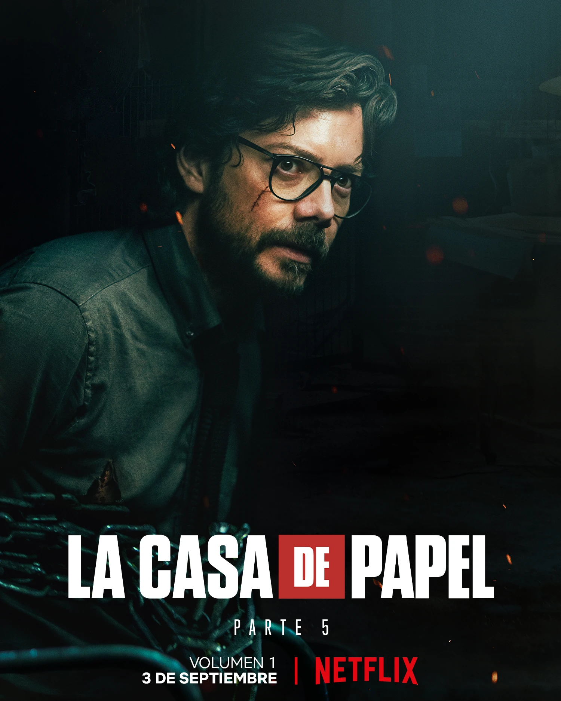

Серхіо Маркіна - найбільш відомий як Професор, є одним із головних героїв серіалу Netflix "Паперовий дім".
Він був натхненником, відповідальним за організацію пограбування Королівського монетного двору Іспанії, а згодом керував пограбуванням Банку Іспанії, яке спочатку планувалося Берліном.
Професор є дитиною знаменитого злочинця Хесуса Маркіни. Серхіо був хворобливою дитиною, через що його батько був змушений зайнятися злочинністю, щоб оплачувати лікування дитини. Хесус часто розповідав професору про свої грабежі та мрії якось пограбувати Монетний двір.
Якось Серхіо ставати свідком того, як його батько здійснив пограбування банку. Батько Професора відволікся на свою дитину і не виконав вимоги, що оточила його поліції, через що Хесуса застрелили.
Вже дорослий Професор, який приховував свою особистість і представляючись Сальвадором Мартіном, вирішує здійснити головну мрію свого батька - пограбування Монетного двору.

Професор найняв 8 грабіжників для пограбування Королівського монетного двору Іспанії, пограбування запланованого його батьком.
Під вигаданим ім'ям Сальвадора "Сальва" Мартіна він зміг зблизитися з головним інспектором, призначеним для пограбування Королівського монетного двору, Ракель Мурільйо. Зрештою, вони обоє закохуються один в одного. Потім Ракель приєднується до банди під назвою «Лісабон».
Професор очолив друге пограбування Банку Іспанії, намагаючись чинити тиск на іспанський уряд, який заарештував Ріо. Це було пограбування, яке він та його зведений брат Берлін спланували багато років тому.
У частині 5 професора схопила та катувала Алісія Сьєрра. Зрештою, вона також захопила Марселя та Бенхаміна Мартінеса. Однак, коли в Алісії починаються пологи і виникають ускладнення, вона не має іншого вибору, крім розв'язати бранців заради того, щоб вони могли допомогти їй з пологами.
Професор та Алісія зрештою працюють разом. Коли їх переслідує поліція, вони ховаються у порожній квартирі. Пізніше Алісія допомагає знайти місцезнаходження вкраденого золота.
Серхіо дуже розумний і прискіпливий. Він сповнений рішучості здійснити найбільше пограбування в історії після того, як планував це кілька років. Як тільки він набирає команду своєї мрії, він змушує всіх неухильно дотримуватися строгого графіка, доповненого основними правилами підготовки до пограбування та його вчинення. Його перфекціоністське ставлення проявляється у його ретельному розгляді та плануванні всіх можливих сценаріїв, які можуть виникнути під час пограбування. Цей далекоглядний підхід допомагає йому у його прагненні до досконалості, коли він закликає команду «дотримуватися плану» у будь-якій ситуації.
Його спокійна поведінка доповнює його вроджені лідерські якості, що дозволяє без суєти вирішувати конфлікти в команді. Більше того, члени команди дуже довіряють його планам та здатності приймати рішення. Це стає очевидним, коли команда вважає за краще дотримуватись протоколу очікування його телефонного дзвінка протягом 24 годин, перш ніж активувати «План Чорнобиль», незважаючи на явні телевізійні докази того, що Професора "схопили". Вони роблять це, тому що дуже поважають його інтелект і вірять, що він зробить усе, що в його силах, щоб урятувати команду від будь-якої кризи.
Серхіо також вважає себе стратегом, подібним до шахіста, якому необхідно ретельно прораховувати кожен хід, перш ніж прийти до дії. Це дозволяє йому приймати важливі рішення в дуже короткі проміжки часу, коли ситуація йде навперекій. Можливо, він є досвідченим майстром бойових мистецтв, оскільки в окремих випадках він легко перемагає Альберто та Ракель.